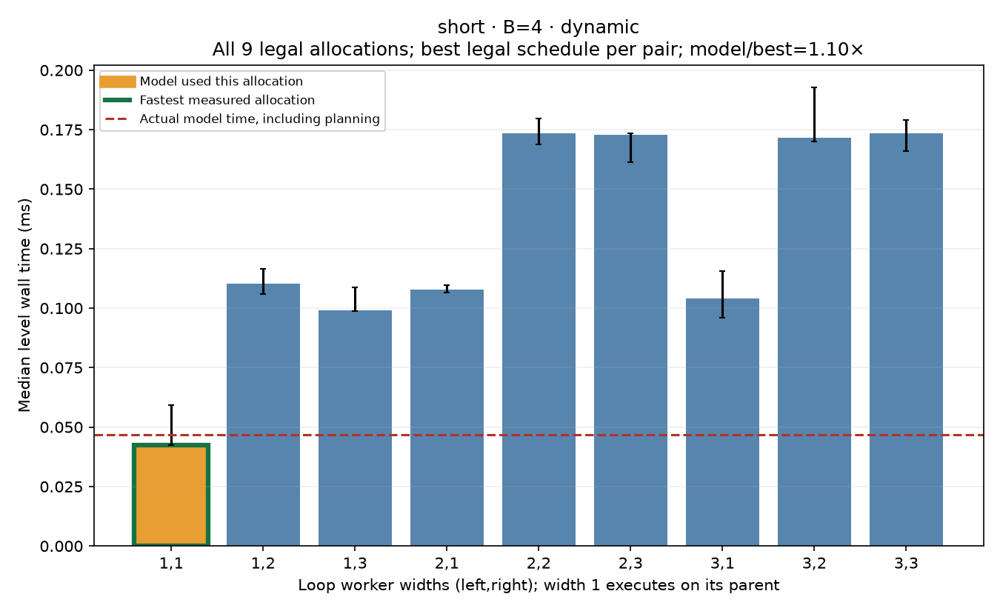
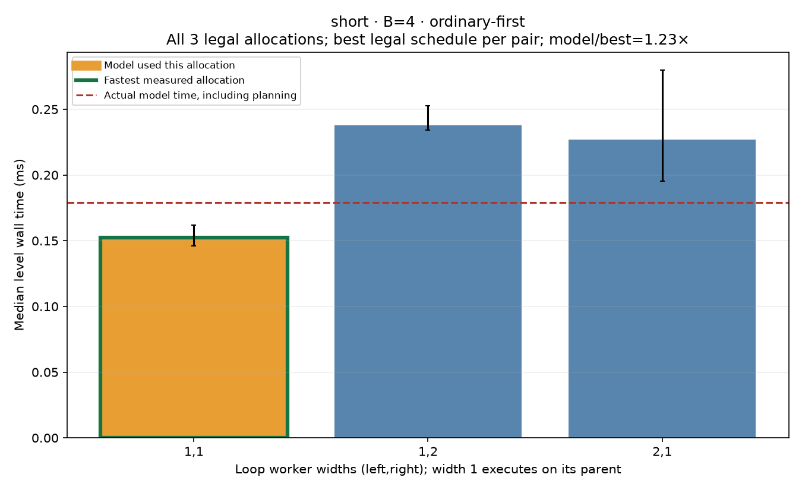

SGPL two-loop exhaustive allocation validation Run from the repository in Linux/Ubuntu WSL: python3 test/tdg_allocation_sweep/run.py On Windows: wsl -d Ubuntu bash -lc 'cd /mnt/d/sgpl/Graph-language-/p1GraphEasy-con-AutoTuner && python3 test/tdg_allocation_sweep/run.py' Smoke run (three independent processes, both policies): python3 test/tdg_allocation_sweep/run.py --cases short --budgets 4 --samples 3 --out proof/tdg_allocation_sweep_smoke Recreate plots/tables from saved data: python3 test/tdg_allocation_sweep/run.py --analyze-only Requires the existing LLVM20/ANTLR/compiler toolchain, GCC/G++, NLOPT, Python3, NumPy and Matplotlib. No GPU or graph-layout autotuning is exercised. Sources are regenerated deterministically from the case specifications in run.py. All generated SGPL fixtures remain in cases/. Builds are incremental for the compiler, but fresh for each workload and adapter. Results use a fixed shuffle seed; settings, CPU, affinity and source/object hashes are saved in manifest.json. Scope and legality ------------------ This is a runtime-model unit validation using real SGPL-generated DOALL loops. The numeric compiler currently emits these independent source loops in separate TDG levels. A linker adapter combines their callbacks only in the test executable. Compiler grouping is therefore NOT validated by these allocation sweeps. Each callback has its own separately allocated array; its only argument is that array. The harness checks the emitted environment shape and fails if it changes. It invokes both callbacks before SGPL consumes either output. No generated loop body, production model, runtime scheduling algorithm, or autotuner is modified. A temporary runtime copy adds two boundary grant-observation calls, shared by both policies. Production sources are hashed before/after the complete run. Width 1 means serial loop execution on its task's parent. A parallel width p>=2 requires p extra workers, because its parent waits. These are NOT p-1 workers. For ordinary-first with two parent callbacks and budget B, enumerate ALL positive integer pairs satisfying e(p1)+e(p2)<=B-2, e(1)=0 and e(p)=p for p>=2. Unused capacity is allowed; an optimal allocation may leave workers idle. For dynamic scheduling, enumerate ALL p1,p2<=B-1 (also capped by trip counts), both admission orders, and one-parent execution. Enumerate two-parent execution when 2+e(p1)+e(p2)<=B. Otherwise the plan necessarily serializes admission and uses one parent. Backfill makes no additional choices for just two callbacks. The dynamic oracle also includes the ordinary executor, matching its fallback. The single DOALL pool serializes parallel teams; parallel loops are not assumed to overlap merely because their thread reservations fit. These are all legal widths under the tested executors, not all possible operating system interleavings or arbitrary timing delays. There are no ordinary sibling tasks in these fixtures: the ordinary-first phase rule itself is not stressed. DOACROSS dependencies and Phase B graph sibling scaling need separate fixtures; these results must not be generalized to those paths. Measurement and interpretation ------------------------------ Each case/budget/policy is run in three fresh processes by default. Each process first trains with eight useful serial SGPL level executions and twelve policy warmup executions, then records nine model executions. It next evaluates every legal forced allocation/schedule in a randomized order, with two untimed warmups and nine timed executions per configuration. Models never see sweep results before making the recorded choices. Model measurement comes before the sweep; repeat-to-repeat variation and process medians expose some, not all, clock drift. Timers enclose the complete two-callback level: planning, dispatch, synchronization and useful work. Source allocation/zeroing, checks and printing are outside it. Ordinary forced allocations keep the ordinary executor's planning overhead. Joint forced schedules replay fixed plans without joint search overhead. The model/oracle ratio therefore measures attainable runtime including the model's planning cost; it is not solely a test of the mathematical width prediction. Forced runs override the profitability gate at the loop boundary and verify the actual grant exactly matches the requested width. They do not use force-borrow environment flags. Native model runs preserve the profitability gate; both the requested widths and actual granted widths are recorded. Orange bars mark every actual allocation used by the model, rather than hiding unstable choices. Each bar is the median across process medians of the best tested schedule for that allocation. Error bars show the min/max process medians. The red dashed line is native model time, including its planning. The green outline marks the fastest measured configuration. The complete schedule table is schedules.csv; allocations.csv collapses schedules only for plotting. raw.csv retains every sample, allocation_columns.csv supplies allocations as columns, and tables.html contains the complete readable tables and plots. Summary bootstrap intervals resample paired process ratios (4000 draws); with only three processes, these intervals are coarse. Selecting the minimum among many noisy configurations is optimistic. The fastest observed allocation is an empirical optimum for this workload, machine and run, not a universal proof. Use more repeats/samples and reproduce on other machines before changing models. The 10% and 25% classifications are reporting tolerances, not correctness claims.
{'case': 'short', 'budget': 4, 'policy': 'dynamic', 'allocations': 9, 'schedules': 27, 'model_actual_left': 1, 'model_actual_right': 1, 'modal_selection_fraction': 1.0, 'requested_allocations': '1,1', 'best_config': '1:1:1:0:1', 'best_ms': 0.042318, 'model_ms': 0.046637, 'model_over_best_ratio': np.float64(1.1025816823490473), 'ratio_bootstrap_low': 0.7302687172553659, 'ratio_bootstrap_high': 1.2770215983742144, 'fallback_fraction': 0.0, 'verdict': '10–25% slower'}

| left | right | median_ns | best_backend | best_order | best_parents | model_selection_fraction | empirical_best |
|---|---|---|---|---|---|---|---|
| 1 | 1 | 42318 | joint | left,right | 1 | 1.0 | 1 |
| 1 | 2 | 110145 | joint | right,left | 1 | 0.0 | 0 |
| 1 | 3 | 98999 | joint | right,left | 1 | 0.0 | 0 |
| 2 | 1 | 107941 | joint | right,left | 1 | 0.0 | 0 |
| 2 | 2 | 173453 | joint | left,right | 1 | 0.0 | 0 |
| 2 | 3 | 173002 | joint | right,left | 1 | 0.0 | 0 |
| 3 | 1 | 104114 | joint | left,right | 1 | 0.0 | 0 |
| 3 | 2 | 171480 | joint | right,left | 1 | 0.0 | 0 |
| 3 | 3 | 173583 | joint | right,left | 1 | 0.0 | 0 |
{'case': 'short', 'budget': 4, 'policy': 'ordinary-first', 'allocations': 3, 'schedules': 3, 'model_actual_left': 1, 'model_actual_right': 1, 'modal_selection_fraction': 1.0, 'requested_allocations': '1,1', 'best_config': '0:1:1:0:2', 'best_ms': 0.152454, 'model_ms': 0.179114, 'model_over_best_ratio': np.float64(1.2254400908574674), 'ratio_bootstrap_low': 0.9814793056749386, 'ratio_bootstrap_high': 1.2922980046440238, 'fallback_fraction': 1.0, 'verdict': '10–25% slower'}

| left | right | median_ns | best_backend | best_order | best_parents | model_selection_fraction | empirical_best |
|---|---|---|---|---|---|---|---|
| 1 | 1 | 152454 | ordinary | left,right | 2 | 1.0 | 1 |
| 1 | 2 | 238014 | ordinary | left,right | 2 | 0.0 | 0 |
| 2 | 1 | 226967 | ordinary | left,right | 2 | 0.0 | 0 |